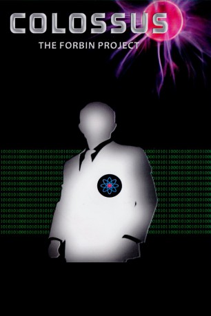
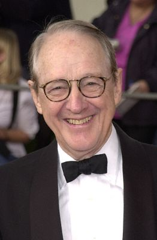

#5824 Colossus
Alternativ: Colossus: The Forbin Project
 
 IMDB-Wertung: 7.2 / 10
IMDB-Wertung: 7.2 / 10  Metascore: 0
Metascore: 0 
Der amerikanische Forscher Forbin entwickelt einen erstaunlich schlauen Computer, der alle nuklearen Verteidigungswaffen der USA unter seiner Kontrolle hat. Kurz nach seiner Installierung entdeckt der Computer die Existenz seines sowjetischen Gegenstücks und besteht darauf, sich mit diesem zu verlinken. Mit dem Ergebnis, dass der neue Super-Super-Computer die Welt mit dem umgehenden Zusammenschluss aller nuklearer Waffen beider Staaten unter Druck setzt. Forbin leitet fortan den technologischen Widerstand gegen die selbst erschaffene Supermacht.
Jahr: 1970
Dauer: 100 Minuten
FSK: 16
Land: USA Studio: Universal PicturesTonspuren:
Untertitel:
Auflösung: 1080p (1920x816) Größe: 5713 MB
Genre: Thriller, Sci-Fi
Regisseur: Joseph Sargent
Drehbuch: William S. Burroughs
Soundtrack:
Darsteller:
 Eric Braeden als Dr. Charles Forbin
Eric Braeden als Dr. Charles Forbin- Susan Clark als Dr. Cleo Markham
- Gordon Pinsent als The President
-  William Schallert als CIA Director Grauber
- Georg Stanford Brown als Dr. John F. Fisher
- Willard Sage als Dr. Blake
- Martin E. Brooks als Dr. Jefferson J. Johnson
- Marion Ross als Angela Fields
- Byron Morrow als Secretary of State
- Robert Cornthwaite als First Scientist
- James Hong als Dr. Chin
- Robert Quarry als Scientist , uncredited
- Leonid Rostoff als Russian Chairman
- Alex Rodine als Dr. Kuprin
 Dolph Sweet als Missile Commander
Dolph Sweet als Missile Commander- Lew Brown als Peterson
- Sid McCoy als Secretary of Defense
- Tom Basham als Thomas L. Harrison
- Serge Tschernisch als Translator
- Paul Frees als Colossus , uncredited
- Fred Holliday als Military Computer Entry - Missile Launch , uncredited
- William Traylor als Party Guest , uncredited
Datei: X:\1970\Colossus (1970, FSK16, 1920x816).mkv seit 25.03.2017
Festplatte: HD 1900-1970
 Es gibt insgesamt 24 Filme in der Gruppe '1970'
Es gibt insgesamt 24 Filme in der Gruppe '1970'